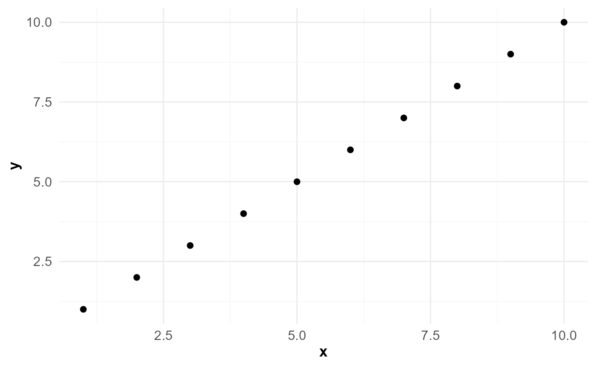

A clean, publication-ready ggplot2 theme used as the standard
aesthetic for all OptSurvCutR plots. Features subtle light-grey
background gridlines for high-precision tracing.
Examples
library(ggplot2)
mock_df <- data.frame(x = 1:10, y = 1:10)
ggplot(mock_df, aes(x, y)) +
geom_point() +
theme_optsurv()
